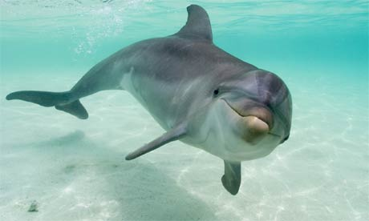

Dolphin Facts
Dolphins are extraordinarily intelligent animals who also display culture, something which was long-believed to be unique to humans.
Dolphins have been observed teaching young how to use tools. They cover their snouts with sponges to protect them while foraging.
Dolphins have several highly developed forms of communication. They have a “signature whistle” which allows other individuals to recognise them.